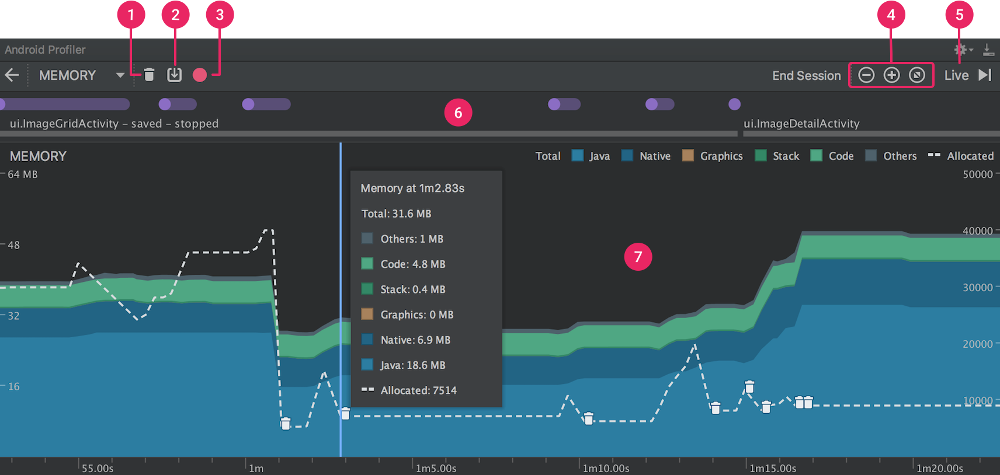
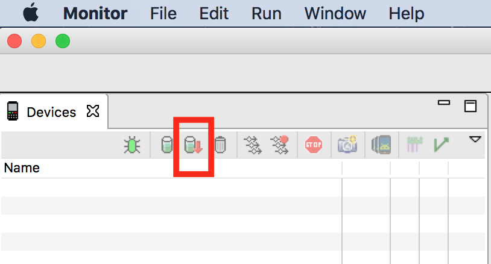

内存使用分析
了解了内存大致的分配策略和回收算法之后，我们对内存有了一点认识。那么在工作当中，实际上与开发关系更加密切的是堆内存使用情况的分析，本节，我们一起来看看，如何分析内存的使用情况。
Java Heap
因为我们知道对象最终都是分配在堆上面的，因此分析内存使用情况肯定就需要获取堆的数据了。在因此我们需要获取Java Heap的数据，并通过一些工具来可视化分析。
获取内存堆数据一般也叫做Dump Heap
使用 Memory Profiler
在开始课程的时候我们已经讲过，这门课程是基于Android Studio 3.x来讲解的，因此，我们可以直接使用AS自带的内存分析工具来查看，保存heap数据。
操作步骤如下：
- View > Tool Windows > Android Profiler ：打开分析面板
- Dump Java heap : 获取内存数据，并归档展示
- Export capture to file: 另存为HPROF文件

现在我们已经通过AS可以直接产看内存中对象情况，并且还得到了一个HPROF文件，这个文件也可以通过其他分析工具进行展示。
HPROF转换
由于androi中提取的hprof不是标准的java se hprof，我们需要通过SDK自带的hprof-conv转换工具做一下文件转换，然后就可以通过其他比如jhat，mat之类的工具查看了。
如果你不知道hprof-conv，可以去android_sdk/platform-tools/目录下查找：
hprof-conv heap-original.hprof heap-converted.hprof
使用Android Device Monitor
除了使用Memory Profiler也可以使用以前的Monitor来dump内存。

MAT
MAT是一款内存分析工具，可以直接安装在现有的Eclipse中当插件使用，也可以直接下载一个独立运行套件。 MAT是Memory Analyze Tool的简称，使用比较直观，可以将晦涩的heap数据已直方图和饼图的形式呈现给开发者。
使用姿势
MAT的使用并不复杂，也不必死记硬背，因为他自带了基本的使用教程Tutorial基本可以覆盖我们的分析需求。
使用MAT的一般步骤包括：
- 打开Heap文件
- 打开Class直方图
- 根据Classloader进行排序
- 比较两份heap快照
- 导出数据报表，比如HTML,CVS，TXT
当然我们可能用不到每一个操作，一般通过图表查看就够了，很少需要导出报表。
有时候类很多，我们需要通过类的引用关系进行问题排查，这时候可以使用MAT的Dominator tree，也就是累的节点树。 相互引用或持有的类之间可以形成不同的节点树，通过节点树，可以一直追溯到GC roots对象。
实用功能
很多时候，我们可以通过MAT自动生成一份Component Report，这个报告会提取一些潜在的问题，比如内存泄漏，重复字符串，空集合，软引用分析，Finalizer分析等。
一般我们分析一heap中有没有内存问题，可以通过以下步骤来处理：
- 查看预览数据quick overview： 是否有大对象，查看top consumers
- 进一步分析发现的大对象实例：通过类的节点树，排查引用关系
- 没有大对象时，可以分析可疑的对象组：特别是占用内存多的组
- 如何发现对象组，也有一些小技巧可使用，比如根据class分组对象，查看总大小；找出最大类的节点树，执行“immediate dominators”